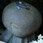
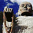
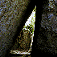

福岡県
＃423 郷之原観音
思いがけず見つけてしまったファンシー帝国
＃422 黒隅寺
やけにアグレッシブな不動明王だらけの寺！
＃360 鬼塚観音
作り込み方がハンパない日本の土俗的ニンフたち
＃348 内尾薬師
大仏を見にいったつもりなのに思わぬお宝を発見！
＃331 胸の観音
巨石信仰+観音信仰÷民間信仰
＃328 袋田不動尊
なんだか頼りなさそうな不動サマ、何故かというと…
＃307 七郎権現
忘れ去られたような場所に展開される強烈な奉納物とは？
＃306 こぶれき地蔵
様々な信仰が渦巻く島をぶらりぶらり
＃304 如意輪寺
カエル、カエル、カエル…蛙と駄洒落に埋め尽くされた寺
珍寺大道場300タイトル達成記念特別企画！
＃300 珍寺的篠栗霊場巡り
九州隋一の民間信仰の牙城でトライアル巡礼！
老若男女よ！願え！願え！願い倒せえ〜！
小さなお堂に人々の鬼気迫る願いが濃縮！
山の上に立つブロンズ仏の里
＃099 福岡大仏
ハク付きまくり寺院の最終兵器！これでトドメだぁ〜
＃041 成田山久留米分院
インド中国なんでもござれの宝石大好きハイブリッド寺院
＃040 南蔵院
巨大寝釈迦のプリクラ、饅頭、キーホルダー・・・
＃039 ゴンタローの家
お犬様に仕える召使がつくった哀愁の露天祭壇
佐賀県
＃429 法安寺
まるで遺跡のような風格を持つ昭和の摩崖仏群
様々な信仰が渾然一体となった濃すぎる寺の濃すぎる信仰
ナゾのコンクリ仏師が急浮上してきたぞお〜
＃213 呼子大仏と仲間達
コンクリ仏の歴史に残る記念碑的作品！
＃212 渡錫の鼻
リアル「塗り仏の宴」…あ、「塗られ仏」でした…
＃043 鶴の岩屋
＃042 コンクリ彫刻師の家
＃255-B 天如塔
西日本唯一の二重螺旋の仏塔が大復活！大興奮！大感動！
＃257 江東寺
地味な寝釈迦さんに隠された意外な事実！
＃256 照龍寺
人間の厄も自然の災厄も被りまくり。ご苦労様です。
＃183 三角形の墓
ゆうもあ的人生の最終ギャグ
＃182 生月大魚藍観音
座像だとばっかり思ってたのに・・・
＃181 山田教会
最果ての教会にあった驚きの装飾！
＃069 長崎観音
＃044 西海楽園
＃291 別府コンクリ仏伝
別府に点在するコンクリ仏の作者の正体とは？
＃290 霊泉寺
探してた地獄よりもっと凄い地獄を見つけちゃった…
＃289 内山観音
県内屈指の名刹に…やっちまったぞ！
＃288 稲積昇龍大観音
県下最大の大観音で感じた数々のデジャヴュ
＃287 轟地蔵
谷底に乱舞する苔むした石仏の群れ
＃286 臼杵大仏殿
生まれたばかりのベビー大仏。でもヘビー級。
＃285 椿大師
九州屈指の民間信仰のメッカにて奉納習俗について考える
＃284 熊野磨崖仏
国重文＆史跡に勝るとも劣らない信仰を集める七福神
＃283 骸骨洞窟
ここまでやるのか！信仰の極北ともいえる驚愕の光景。
＃219 高塚地蔵尊
お願い書き込み掲示板「祈願文」の濃すぎる世界！
「九州一の霊場」の真相や如何に！
スペース”ブッダ☆ファンタジ−”観音！
＃155 長洲の精霊送り
あまりにもアグレッシブな盆行事に仏さんもビックリ！
＃142 金龍地獄大仏とスギノイパレス
昭和の温泉文化を詰め込んだ温泉街にある大仏
＃141 別府大仏
日本で二番目に出来たコンクリ大仏！
＃139 善徳院
珍寺係数マキシマム！世界が羨む合掌ゲート！
大分石仏界のニューフェース！目指せ500年後の重要文化財！
＃137 城山鬼子母神
六郷満山仏教の地に咲いた現代のプチ仏教パラダイス
地獄より恐い極楽
＃135 羅漢寺
謎のからくり迷路としゃもじ
熊本県
＃262 弓削神社
＃305 相良観音
桃源郷に潜む超絶千手観音と石化人
積み上げられた無数のクギチン、クギマンに人間の業の深さを思う
＃261 足手荒神
無数の手形足形に込められた深刻で真剣な願いに圧倒される
＃260 粟嶋神社
あまりにも小さすぎるミニ鳥居！潜れるのか?
＃259 清水滝
美しすぎる滝の隣にある不思議すぎる象さん！
＃258 宝来宝来神社
火の国に新たに生まれた脳内マグマの大噴火！
＃101 日輪寺
ツツジの名所、赤穂浪士の遺髪、そして大仏・・・
＃100 大仏銀座！小岱山
〜荒尾大師 蓮華院誕生寺奥の院 大釈迦座像〜
大仏多発地帯に生息する3つの大仏物語!
宮崎県
＃415 観音寺
日本一の龍王観音像より気になって仕方がないモノとは…
＃386 蛇信仰にまつわるエトセトラ；その1
＃386 蛇信仰にまつわるエトセトラ；その2
神話の地に密かに広がる白蛇信仰の実態にズームイン！
＃354 東霧島神社
鬼、竜、霊水…何だかにぎやかな神社
＃185 高鍋大師
石に刻まれた超高濃度な人生の痕跡を見よ！
南九州の反骨精神の象徴、弥五郎どんを追う！
＃178 田の神さあ
南国のペインテッドゴッドは多種多様
鹿児島県
＃355 岩龍神
山から現れた巨大なスケールの龍神サマ！
南九州の反骨精神の象徴、弥五郎どんを追う！
九州最南端の地に花咲く謎のトンデモ幻想帝国
珍寺リーサルウェポン！我が約束の地なり！
＃117 最福寺
日本一！木像弁天像！
＃116 谷山の大観音
一切が謎の純大観音！
沖縄県
＃318 石庭
世界屈指のパワースポットでついに開眼するのか？俺？
＃203 喜宝院蒐集館
日本最南端のお寺の摩訶不思議な佇まい
与那国にある広大な死者の街。そして・・・
歌って踊って！楽しすぎるぞ！八重山のお盆！
＃132 名護の亀甲墓
ただでさえ強烈な亀甲墓なのに・・・
＃093 斎場御獄
琉球王朝最高のスピリチュアルスポット！
珍寺大道場 HOME